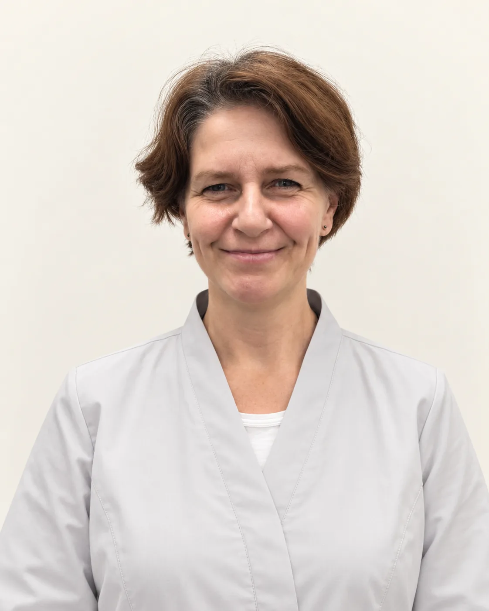
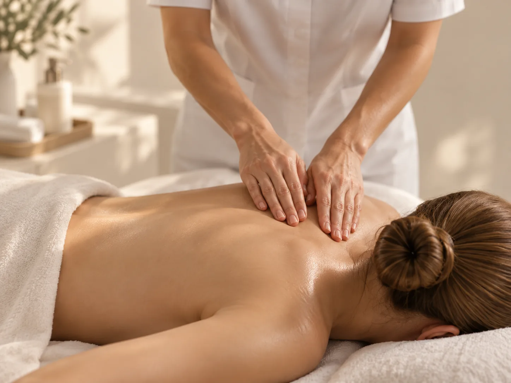
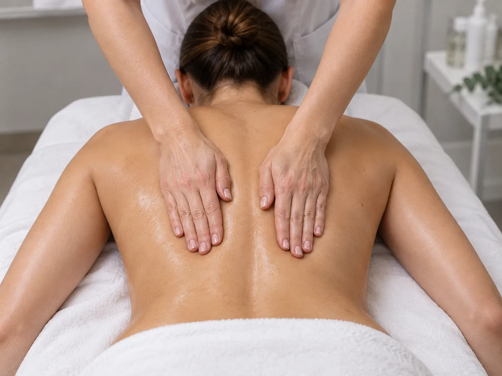

ЛиндаЕвгения Михайловна
Медицинская сестра по массажу
Общий и миофасциальный массаж, триггерная терапия, техники релаксации нервной системы
- Опыт
- многолетняя практика медицинского массажа
Тело
Когда телу нужно не просто расслабление, а точное воздействие.
Технику, зону и интенсивность специалист подбирает по жалобе, состоянию и цели: снять напряжение, поддержать лечение или восстановиться после нагрузки.

Медицинский, или лечебный, массаж подбирают по жалобе и состоянию тела, а не по меню салона. Массаж в клинике 8.0.8 в Москве, у метро «Римская», проводит Линда Евгения Михайловна, медицинская сестра по массажу: общий и миофасциальный массаж, триггерная терапия. Записаться можно ежедневно с 9:00 до 21:00.
Напряжена спина или поясница, зажата шея, не проходит боль в мышцах после нагрузки. Можно записаться на массаж «для расслабления», а можно на медицинский, с учётом состояния тела.
Не обязательно знать, какой массаж нужен. Достаточно описать жалобу: специалист определит зону, интенсивность и технику. Если массаж сейчас не показан, подскажет, к какому врачу обратиться.
 Коррекция фигурыАппаратная коррекция фигуры: Эндосфера, вакуумный массаж Ultraformix, ультразвуковая кавитация.Сеанс от 2 200 ₽
Коррекция фигурыАппаратная коррекция фигуры: Эндосфера, вакуумный массаж Ultraformix, ультразвуковая кавитация.Сеанс от 2 200 ₽
Массаж шейно-воротниковой зоныМассаж шеи, плеч, верхней части груди и рук, 30 минут. Можно добавить массаж головы.Сеанс от 2 500 ₽
Массаж спиныМассаж шеи, рук и всей спины, 30 минут. Общий массаж всего тела длится 60 минут.Сеанс от 2 500 ₽После первого сеанса вы будете знать:
Это самые частые запросы. Сидячая работа, телефон в руках, стресс: мышцы шеи, плеч и спины долго находятся в одном положении и устают. Появляется скованность, тяжесть в плечах, иногда головная боль напряжения.
Массаж шейно-воротниковой зоны захватывает шею, верхнюю часть спины, плечи и грудную клетку. Массаж спины включает шею, руки и всю спину. Специалист прорабатывает мышцы, снимает напряжение и возвращает им подвижность.
Сеанс массажа шейно-воротниковой зоны и сеанс массажа спины длятся по 30 минут. Если нужно больше зон, их можно совместить или выбрать общий массаж всего тела на 60 минут.
После массажа шеи бывает лёгкая слабость или желание отдохнуть. Если шея после массажа болит сильно, кружится голова или появилось онемение, скажите специалисту: он изменит интенсивность или подскажет, к какому врачу обратиться.
Если боль в спине отдаёт в руку или ногу, есть онемение или слабость, сначала покажитесь неврологу. Массаж часто входит в лечение, но порядок определяет врач.
Фасциями называют тонкие оболочки из соединительной ткани, которые окружают мышцы. При долгом напряжении в мышцах и фасциях появляются уплотнения и болезненные точки, их называют триггерными. Они могут давать боль не только на месте, но и на расстоянии.
При миофасциальном массаже специалист работает медленно: надавливает, растягивает ткани, прорабатывает триггерные точки. Это не расслабляющий массаж, местами он ощутимый. Нажим подбирают так, чтобы он был терпимым.
После миофасциального массажа проработанные места могут быть чувствительными день-два. Если боль сильная или не проходит, скажите специалисту.
Стоимость считают по зоне и времени, как у другого массажа. Подойдёт ли миофасциальная техника, специалист решит после разговора о жалобе.
Один сеанс может снять напряжение. Если проблема копилась месяцами, чаще нужен курс. Сколько сеансов и с какой частотой приходить, специалист решает по состоянию после первого визита, а не заранее по шаблону.
На курс влияют жалоба, её давность, нагрузки и то, как тело отвечает на массаж. Между курсами обычно делают перерыв.
Частоту тоже подбирают: ежедневно, через день или реже. Важно не пропускать сеансы без причины и рассказывать специалисту, как вы себя чувствуете между ними.
Для общего массажа всего тела есть комплекс из 10 процедур за 45 000 ₽, это дешевле, чем 10 сеансов по отдельности. Стоимость курса для отдельных зон уточнит администратор.

Медицинская сестра по массажу
Общий и миофасциальный массаж, триггерная терапия, техники релаксации нервной системы
Массаж спины (шея, руки, спина) стоит 3 500 ₽ за 30 минут, массаж шейно-воротниковой зоны 2 500 ₽, общий массаж всего тела 5 000 ₽ за 60 минут.
По телефону +7 (938) 099-30-09, ежедневно с 9:00 до 21:00. Направление врача не нужно.
Москва, ул. Сергия Радонежского, 15–17, стр. 2, этаж 1. Рядом станции метро «Римская» и «Площадь Ильича».
Линда Евгения Михайловна, медицинская сестра по массажу с аккредитацией «Медицинский массаж». Она проводит общий и миофасциальный массаж и триггерную терапию.
Классический массаж – это набор приёмов: поглаживание, растирание, разминание. Медицинский (лечебный) использует их и другие техники, но зону и интенсивность подбирают по жалобе и состоянию.
Отдельная зона занимает 30 минут, ноги с ягодицами 40 минут, общий массаж всего тела 60 минут.
Устойчивый эффект чаще даёт курс. Число сеансов специалист определит по состоянию.
Часто да, но не в остром периоде. Если боль отдаёт в руку или ногу, сначала нужен осмотр невролога.
Да: температура и острые воспаления, кожные высыпания в зоне массажа, тромбоз, онкологические заболевания, обострение хронических болезней. Полный список уточнит специалист.
Да, массаж может закреплять результат основного лечения. Порядок подскажет специалист.
Имеются противопоказания. Необходима консультация специалиста.